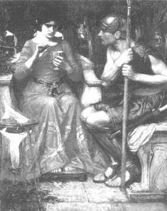

Medeya
Böylece Kapıdağ Yarımadası'ndaki devlerden zar zor kurtulan Argonotlar, bir süre canhıraş kürek çektikten sonra, biraz dinlenmek üzere dingin bir limanda yeniden karaya çıktılar... Orada da çok ünlü, ama bahtsız bilici Fineus'la (Phineus) karşılaştılar...
Fineus, Baştanrı Zeus'un şerrine uğramışlardandı... Çünkü o, tanrıların bilip de başkalarının bilmediği ve bilmemesi gereken şeyleri gizlice insanlara aktarıyordu! Bu yüzden Zeus onun hem gözlerini kör etmiş, hem de buraya, Harpya denen canavarların içine atmıştı!.. Bu Harpyalar, zavallı Fineus tam yemek yiyeceği zaman, sofrasında ne var ne yoksa hepsini yerlere atıp saçıyorlardı! Baştanrı Zeus'un biçtiği bu cezaya isyan kesilen Argonotlar, söz konusu canavarları öldürüp saygıdeğer yaşlı Fineus'u rahata kavuşturdular. Bilici Fineus da birazcık olsun gönül borcunu yerine getirmek üzere, onlara Altın Post'un bulunduğu Gürcistan'a ulaşmadan önce, yolları üstündeki olası tehlikeleri iyice anlatıp belletti... Bunlardan en önemlisi, İstanbul Boğazı'nın iki yakasındaki oynak ve hareketli kayalıklardı... Rüzgârlar biraz sert estiklerinde, Boğaz'ın iki yakasındaki bu kayalıklar hareketlenip birbirlerine yanaşıyor; yalnızca oradan geçen gemileri değil, kuşları bile sıkıştırıp boğuyorlardı! Fineus, boğazdan geçmeden önce Karadeniz'e doğru bir güvercin salmalarını öğütledi onlara... Güvercin geri dönmezse, boğaz yolu açık demekti... Artık hızlı hızlı kürek çekerekten Boğaz'ı rahatça geçebilirlerdi...
Argonotlar, bilici Fineus'un öğütlediklerini bir bir uyguladılar. Söz konusu Boğaz'ın girişine geldiklerinde bir güvercin saldılar... Saldıkları güvercin; tam Karadeniz'e açılacağı sırada, Boğaz'ın iki yakasındaki kayalar aniden hareketlenip birbirlerine yapıştılar ve uçan güvercinin son anda kuyruk ucunu yakalayıp sıkıştırabildiler! Güvercin de bir iki tüyünü kayalar arasında bırakıp Karadeniz'in enginlerine doğru süzülüp gitti. Arganotlar bir süre beklediler ve kayalıklar birbirinden ayrılır ayrılamaz, veryansın açık denize doğru kürek çekmeye başladılar. Tam Boğaz'dan çıkacakları sırada kayalar yeniden birbirlerine yanaşmaya başladı. Çünkü tanrılar, tanrıların koyduğu yasakları dinlemeyip dünyayı keşfetmeye çıkan isyancı ve yürekli insanlara göre ayarlamışlardı bu kayaların açılıp kapanmasını. Argonotların komutanı İyason, bütün güçleriyle kürek çekmeyi sürdürmeleri buyruğunu verdi arkadaşlarına. Gemideki kürekçilerin korkmadan ve yılmadan yollarına devam ettiklerini gören kayalar; şaşkınlıktan oldukları yerde öylece mıhlanıp kaldılar! Böylece Argo gemisinin kürekçileri; o zamanlar "konuksever deniz" anlamına gelen Pontos Eukseynos dedikleri bugünkü Karadeniz'e rahatça ulaştılar. Bu korkusuz Argonotları gören İstanbul Boğazı'nın iki yakasındaki kayalıklar da, artık o tarihten sonra oldukları yerde kaldılar. Gene ta o zamandan beri gerek insanlar, gerek balıklar kuşlar, korkusuzca İstanbul Boğazı'ndan gelip geçmeye başladılar.
Argonotlar Karadeniz'e ulaşınca, denizin adının da esinlediği dostluk ve güven duygularıyla rahatladılar ve kıyıları izleyerek ağır ağır kürek çekmeye başladılar. Kürekçilerin bir kısmı, tanrısal ozan ve müzisyen Orfeus'tan gitarını çalmasını, ezgiler söylemesini istediler... O da zaten ozanlığının ve esinperilerinin verdiği duygularla için için coşuyor; kendini güzel şeyler söyleyebilecek kıvamda buluyordu. O yüzden insanoğlunun hiç bitmeyen uzun yolculuklarını, bu yolculuklarda ona en güzel yoldaşın aşk olması gerektiğini dillendiren dokunaklı bir ezgiye başladı... Dingin sularda kürek çeken bir kısım Argonot, onun bu ezgisiyle kendinden geçti; artık kürekleri kendi hallerine bıraktılar... Sevginin ve ışığın verdiği güçle başıboş kalan kürekler kendiliğinden suları yarıyor, Argo gemisi de suların üstünde sessizce kayıp gidiyordu. Orfeus'un ezgilerini duyan Karadeniz'in balıkları da geminin çevresine doluşup oynaşmaya, sıçrayıp sıçrayıp yeniden sulara gömülmeye başladılar. Yunus balıkları güverteye çıkıp Orfeus'un yanına sokulmak, ona dokunmak istiyorlardı!.. Güneşin cömert ışınları mavi suları habire yıkayıp daha da parlatıyor, durulaştırıyordu. Cins cins balıklar; göklerden alçalıp alçalıp gelen ve her zaman ürktükleri o martılardan bile kaçışmıyorlardı artık. Çünkü martılar avlanmak için değil, Orfeus'un ezgilerini daha yakından duymak ve onu görebilmek için alçalıp alçalıp havalanıyorlardı. Zaten o yüzden de geminin yelkenlerine, güvertesine kanatlarıyla dokunup dokunup geçiyorlardı...
Argonotlar uzun bir yolculuktan sonra Terme Çayı'nın çevresinde yaşayan ünlü Amazon kadınların yanlarına da kısa bir yarenlik için uğradılar... Daha sonra da beklenmedik, ufak tefek serüvenlerden fazla etkilenmeden, Altın Post'un saklı tutulduğu Gürcistan'a ulaştılar. Gemilerini kumsala çekip halatlarla oradaki delikli taşlara bağladılar...
Argo gemisinin komutanı İyason, birkaç arkadaşını da yanına alıp doğruca Gürcistan kralı Ayetes'in sarayına gitti ve onunla tanıştı. İyason'la kral, bir süre yarenlik ettiler. Daha sonra kral ve yanından ayrılmayan kızı prenses Medeya konuklarını saraylarında ve çevresinde gezdirdiler... İyason ve arkadaşları, daha önce övgülerini duydukları sarayın ve bahçesinin hayalleri aşan güzelliğiyle büyülendiler...
Gerçekten daha binyıllar süresince de dillere destan olacaktı kralın bu cennet bahçesi... Türlü türlü ağaçlar ve çiçeklerle bezeli bu bahçede, dört çeşme vardı: Birinden buz gibi su, ötekilerden süt, bal ve en sonuncusundan da, tanrı Diyonisos'un insanlığa armağan ettiği şarabı akıyordu gürül gürül...